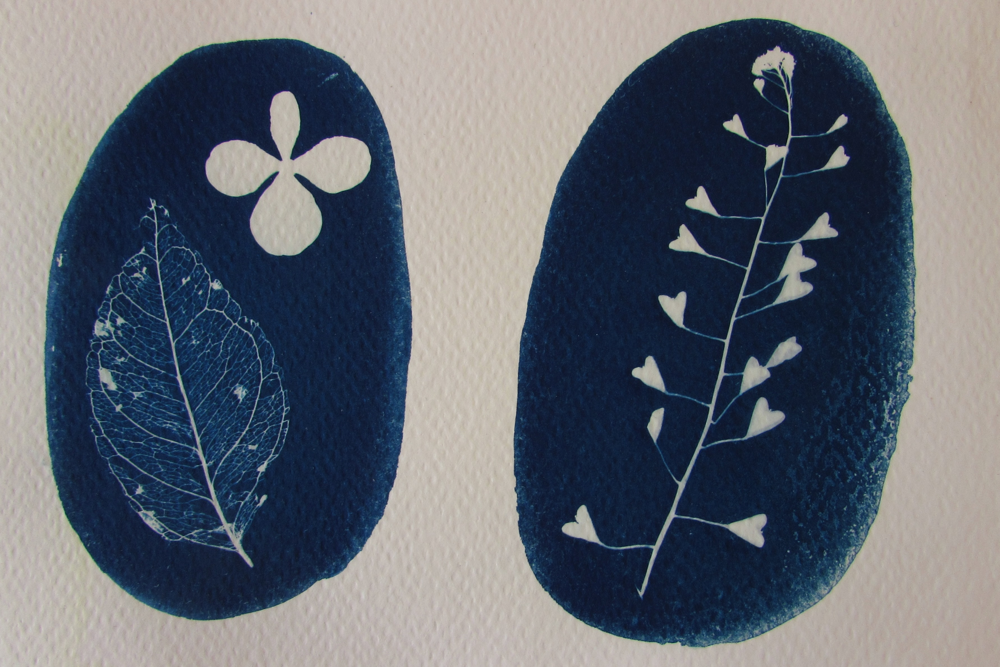
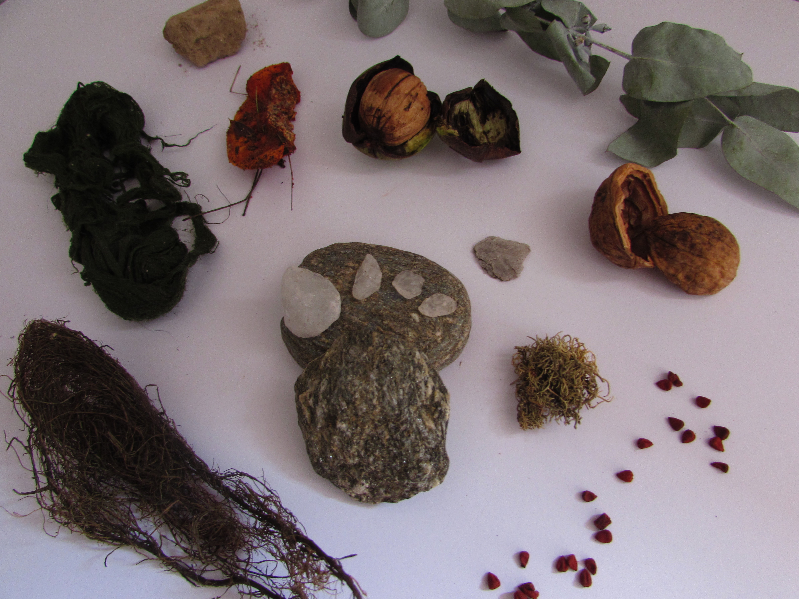

Statement

"Trabajo con elementos orgánicos y soy de invierno"

"En lo pequeño invito a recorrer el detalle, lo íntimo"

"En mis obras los materiales que dan la forma son también la nieve, la montaña rocosa, el bosque y la cascada, es eso lo que busco atrapar"

"En estos lugares tan poco habitados, como en mí, prevalece la naturaleza. Hay un arco iris como un puente entre ellos y mi taller. Quizás los he habitado en esta vida o en otras y vuelven desde la nostalgia y la admiración"